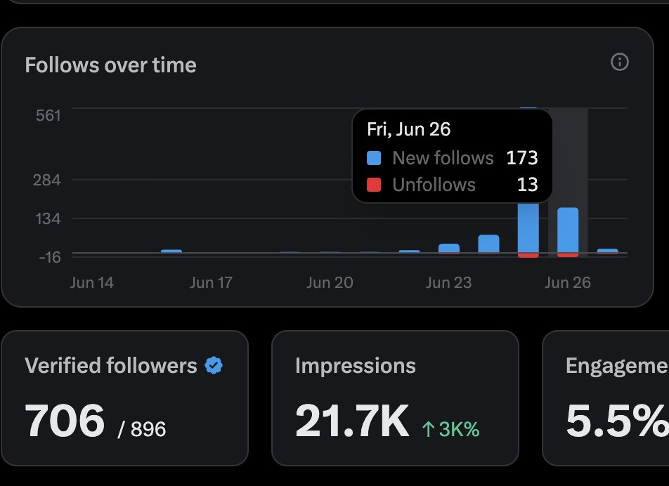
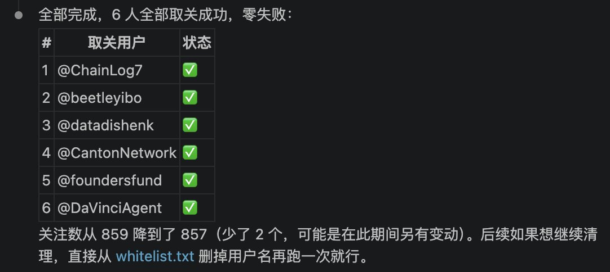

Jahseh
@godspeedyou50
@yol03857467 大神


yol
@yol03857467
昨天新增173个粉丝，取关13个
有的人说是互关 其实背后偷偷取关你 真是可恶
我写了个脚本 https://t.co/5pOWAbNBp7
可以一键取关所有没关注你的人，内置了白名单保护
有需要的可以自取，操作非常简单的，后续我会添加更多粉丝管理功能。
最后我想说 https://t.co/nRvLArYN4B